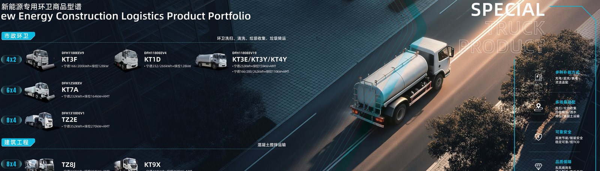

Electric Special Vehicles
Municipal sanitation and construction-specialised EVs — sprinklers, sweepers, garbage trucks and concrete mixers. Zero emissions, low noise, and EBS energy recovery for the most stop-start duty cycles in road transport.
Sanitation Trucks — Cleaner Cities
Quiet, emission-free municipal fleets can work through the night. Energy recovery via EBS adds up to 20% efficiency on stop-start routes.

KT3F
KR cab, 4x2, 18 t GVW. CATL 166/200 kWh, LvKong 128/260 kW. Water-tank sprinkler with electric pump drive — motor-direct or 4AMT for road watering and dust control.

KT1D
KR cab, 4x2, 18 t GVW. CATL 232/266 kWh, LvKong 128/260 kW direct drive, EBS. Road sweeper-washer with vacuum and water-spray systems — quiet enough for early-morning city centres.

KT3E / KT3Y / KT4Y
KR cab, 4x2, 18 t GVW. CATL 166–262 kWh, LvKong 110–210 kW with 4AMT. Rear-loading garbage compactors; KT3Y/KT4Y add CCS2 charging for European municipalities.

KT7A
KR cab, 6x4, 25 t GVW. CATL 232 kWh, LvKong 164/308 kW. Large-capacity road washing and dust suppression for highways, ports and mine access roads.
Mixer & Heavy Refuse Trucks
Construction-grade chassis for concrete logistics and heavy municipal collection — including the WVTA GSR2-compliant KT9X for full EU type approval.

TZ2E
KL cab, 8x4, 31 t GVW. CATL 252 kWh, LvKong 270/450 kW, 4AMT for smooth stop-start. Heavy-duty refuse collection engineered for municipal fleets.

TZ8J / KT9X
TZ8J (45 t) runs an 8 m³ drum on CATL 333 kWh with GB/T charging; KT9X (44 t) adds 410 kWh, CCS2 and WVTA GSR2 compliance with EBS+AEBS+ESC for full EU type approval.
Municipal & Construction in Action
Official Dongfeng brochure photography — sanitation bodies and mixers built on proven KR, KL and KC electric chassis.

Quiet Enough for the Night Shift
Municipal work happens while the city sleeps. Electric sanitation trucks run below diesel noise levels with zero tailpipe emissions — perfect for urban centres and green-city tenders.
- Sprinklers (KT3F / KT7A) for watering and dust control
- Sweeper-washer (KT1D) for daily street cleaning
- Garbage compactors (KT3E / TZ2E) with 4AMT stop-start smoothness
- EBS energy recovery up to 20% on collection routes
- CCS2 charging variants for European municipal tenders
Concrete Delivered, Emission-Free
Construction sites are electrifying their gate access and emissions reporting. Dongfeng electric mixers deliver ready-mix with the torque to climb site ramps fully loaded.
- TZ8J: 45 t 8x4 mixer with 8 m³ drum, GB/T charging
- KT9X: WVTA GSR2 type-approved with EBS+AEBS+ESC
- CCS2 interface and 410 kWh pack for EU duty cycles
- 350/520 kW LvKong motor keeps the drum turning under load
- Zero exhaust and low noise on inner-city projects
Technical Specifications
Full factory specification sheets are available on request — variants shown below are the standard export configurations.
| Model | Type | Drive | Battery | Motor | GVW |
|---|---|---|---|---|---|
| KT3F | Sprinkler | 4x2 | CATL 166/200 kWh | LvKong 128/260 kW | 18 t |
| KT1D | Sweeper | 4x2 | CATL 232/266 kWh | LvKong 128/260 kW | 18 t |
| KT3E | Garbage | 4x2 | CATL 232 kWh | LvKong 156/310 kW | 18 t |
| KT3Y/KT4Y | Garbage/Sprinkler | 4x2 | CATL 166–262 kWh | LvKong 110–210 kW | 18 t |
| KT7A | Sprinkler | 6x4 | CATL 232 kWh | LvKong 164/308 kW | 25 t |
| TZ2E | Garbage | 8x4 | CATL 252 kWh | LvKong 270/450 kW | 31 t |
| TZ8J | Mixer | 8x4 | CATL 333 kWh | LvKong 350/520 kW | 45 t |
| KT9X | Mixer Euro | 8x4 | CATL 410 kWh | LvKong 350/520 kW | 44 t |
Explore Other Dongfeng EV Lines
Electric Tractor
Prime movers from 42 t port haulage to 120 t mining road trains with CATL 400–600 kWh packs.

Electric Dump
Construction and mining tippers from 31 to 80 t with reinforced frames and swap-battery options.

Electric Cargo
Box, flatbed and livestock trucks with up to 70 m³ bodies and 400 km of real-world range.
Electrify Your Municipal or Construction Fleet
Tell us the application, body spec and route — we will match the right KT or TZ special vehicle and quote factory-direct within 24 hours.